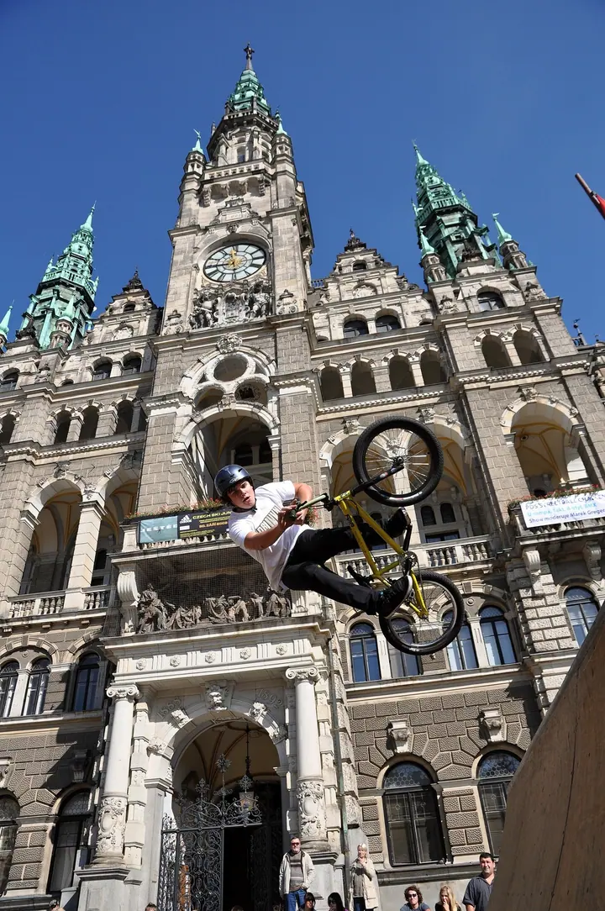
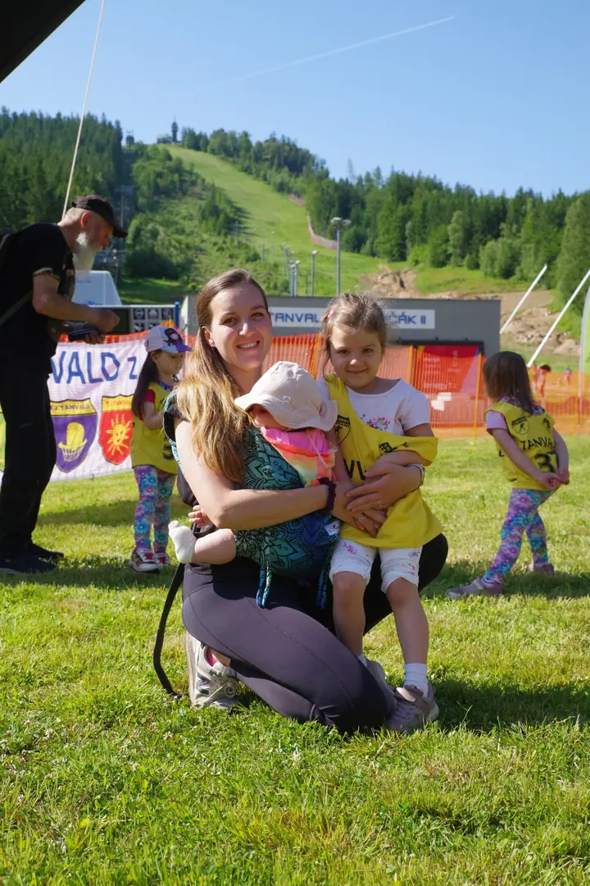
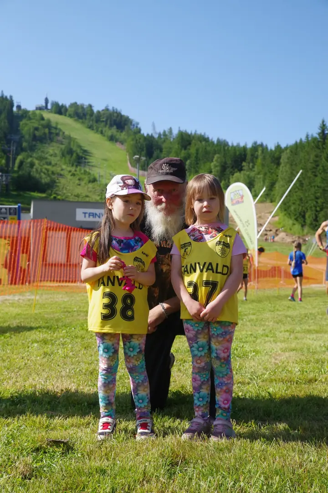

01 / 04
Sportovní akce a závody
Fotím závody a sportovní dny od startu po cíl. Dětské běhy, rodiny u trati i jezdce ve vzduchu.
Zeptat se na termín→


Závody, svatby a lidé z Jizerských hor
Zeptat se na termín →(01) Ahoj
Fotím pod jménem Atelier Smržovka a nejčastěji mě potkáte u startovní brány nebo na svatbě . Baví mě pohyb, lidé a místa kolem Tanvaldu a Liberce .
(02) Co fotím
01 / 04
Fotím závody a sportovní dny od startu po cíl. Dětské běhy, rodiny u trati i jezdce ve vzduchu.
Zeptat se na termín→02 / 04
Fotím svatební den tak, jak ho prožíváte, včetně hudby, hostů a cesty kočárem.
Zeptat se na termín→03 / 04
Fotím hotely, restaurace a jejich interiéry, aby se daly ukázat na webu nebo v propagaci.
Zeptat se na termín→Dále nabízím
V ateliéru fotím portréty s nápadem a rekvizitami. Z hotových snímků umím připravit i nástěnný kalendář.
↗(04) Postup
Od první zprávy po hotovou galerii.
Krok 1 z 4
Pošlete mi e-mail s datem, místem a tím, co chystáte. Ozvu se vám zpátky.
Krok 2 z 4
Probereme program akce nebo svatebního dne a na co se při focení zaměřit.
Krok 3 z 4
Na místě se pohybuji nenápadně a fotím průběh od začátku do konce.
Krok 4 z 4
Vybrané snímky upravím a předám vám je v domluveném termínu.
Na horách nad mraky, u trati mezi lidmi
(05) Za objektivem
Atelier Smržovka je můj fotografický ateliér v Jizerských horách. Fotím hlavně tam, kde se něco děje: na dětských bězích pod Tanvaldským Špičákem, na sportovních akcích i na svatbách.
Na závodech mě zajímají celé rodiny, nejen vítězové. Maminky s dětmi v náručí, malí běžci se startovními čísly a ta chvíle, kdy se všichni rozběhnou. Na svatbách hledám stejnou atmosféru a radost.
Kromě akcí fotím také portréty v ateliéru, ze kterých vznikají třeba nástěnné kalendáře, a interiéry hotelů a restaurací. A když je čas, vyrazím na hory za inverzí.
Atelier
Atelier Smržovka · Fotograf sportovních akcí a svateb
Ano, rád přijedu i na místní závody, dětské běhy nebo sportovní dny. Napište mi termín a místo.
Fotím po okolí, hlavně na Tanvaldsku a na Liberecku. Při větší vzdálenosti se domluvíme individuálně.
Cenu připravím podle typu akce, délky focení a místa. Pošlete mi pár informací e-mailem a já vám pošlu nabídku.
Ano, z ateliérových portrétů už jsem kalendáře připravoval. Rádi spolu vymyslíme koncept.
(07) Kontakt
Napište pár vět o tom, co si představujete, a termín, který se vám hodí.
atelier.smrzovka@seznam.cz